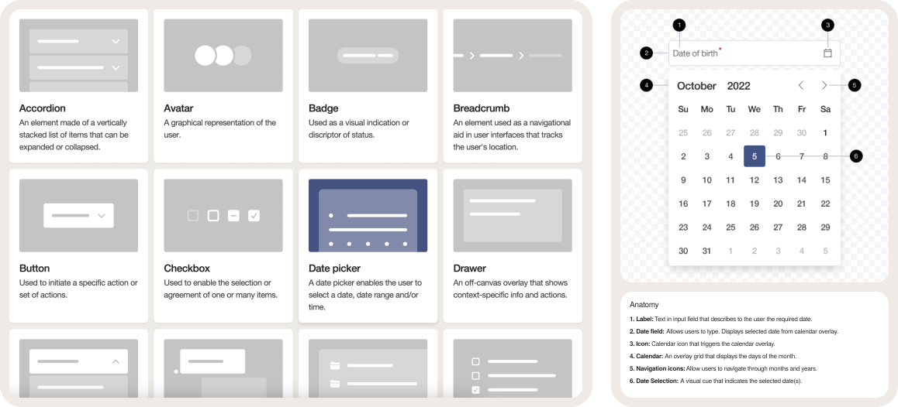

Enterprise AI Design System
Transformation of a traditional enterprise SaaS design system into a modern AI-native interaction system, aligned with PwC design guidance and current AI product patterns.
The work focuses on reusable foundations for enterprise AI products — visual language, interaction behaviour, and shared components — rather than a single standalone product experience.
System foundations

Focus areas
- Modernising the visual language while remaining aligned with PwC design guidance.
- AI-specific patterns such as prompt composers, agent states, citations, source chips, artifacts, loading, permission and recovery states.
- Standardising interaction behaviour across multiple AI products — not only refreshing visual components.
- Reusable foundations that support consistency, scalability, and design-to-development alignment.
Detailed case study sections — process narratives, pattern documentation, and expanded visuals — will be added here. Existing design-system assets are shown above; additional AI-native pattern materials are reserved for later completion.